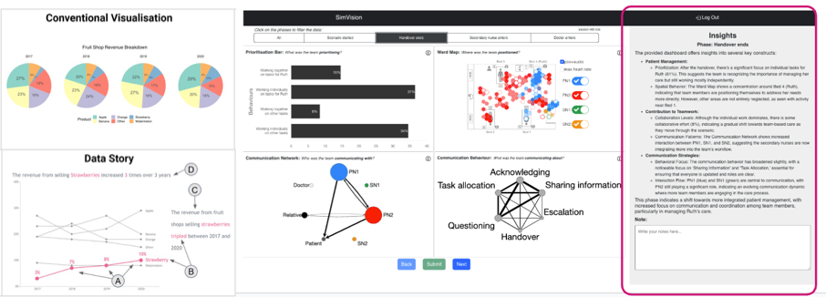

Data Storytelling & Interpretability

A conventional analytics chart vs a enhanced chart with data storytelling elements (annotations, narrative visualisation). and a dashboard with a GenAI-generated summaries explaining the same teamwork metrics.
This research area is about helping people make sense of complex learning analytics — not just presenting numbers, but explaining what they mean and why they matter. I explore how data narratives, comics, dashboards, and conversational AI interfaces can make analytics more interpretable, trustworthy, and actionable for teachers and students.
Recent work includes Data Comics for Learning Analytics, which uses generative AI to turn simulation data into accessible visual narratives for nursing education, and VizChat, a multimodal generative-AI chatbot that adds contextualised, conversational explanations directly inside learning analytics dashboards.
Key papers
See the Publications page (filter by “Data storytelling” or “Dashboards”) for the complete list, including DOIs and BibTeX entries.